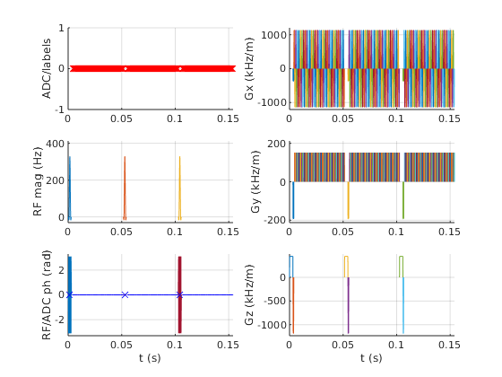

seq=mr.Sequence();
fov=220e-3; Nx=64; Ny=64;
thickness=3e-3;
Nslices=1;
lims = mr.opts('MaxGrad',32,'GradUnit','mT/m',...
'MaxSlew',130,'SlewUnit','T/m/s', ...
'rfRingdownTime', 30e-6, 'rfDeadTime', 100e-6);
[rf, gz] = mr.makeSincPulse(pi/2,'system',lims,'Duration',3e-3,...
'SliceThickness',thickness,'apodization',0.5,'timeBwProduct',4);
deltak=1/fov;
kWidth = Nx*deltak;
dwellTime = 4e-6;
readoutTime = Nx*dwellTime;
flatTime=ceil(readoutTime*1e5)*1e-5;
gx = mr.makeTrapezoid('x',lims,'Amplitude',kWidth/readoutTime,'FlatTime',flatTime);
adc = mr.makeAdc(Nx,'Duration',readoutTime,'Delay',gx.riseTime+flatTime/2-(readoutTime-dwellTime)/2);
preTime=8e-4;
gxPre = mr.makeTrapezoid('x',lims,'Area',-gx.area/2,'Duration',preTime);
gzReph = mr.makeTrapezoid('z',lims,'Area',-gz.area/2,'Duration',preTime);
gyPre = mr.makeTrapezoid('y',lims,'Area',-Ny/2*deltak,'Duration',preTime);
dur = ceil(2*sqrt(deltak/lims.maxSlew)/10e-6)*10e-6;
gy = mr.makeTrapezoid('y',lims,'Area',deltak,'Duration',dur);
for s=1:Nslices
rf.freqOffset=gz.amplitude*thickness*(s-1-(Nslices-1)/2);
seq.addBlock(rf,gz);
seq.addBlock(gxPre,gyPre,gzReph);
for i=1:Ny
seq.addBlock(gx,adc);
seq.addBlock(gy);
gx.amplitude = -gx.amplitude;
end
end
seq.plot();
[ktraj_adc, ktraj, t_excitation, t_refocusing, t_adc] = seq.calculateKspace();
time_axis=(1:(size(ktraj,2)))*lims.gradRasterTime;
figure; plot(time_axis, ktraj');
hold; plot(t_adc,ktraj_adc(1,:),'.');
figure; plot(ktraj(1,:),ktraj(2,:),'b');
axis('equal');
hold; plot(ktraj_adc(1,:),ktraj_adc(2,:),'r.');
seq.write('epi.seq');
Current plot held
Current plot held
